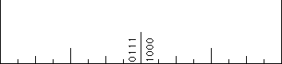
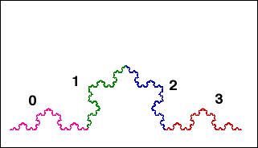
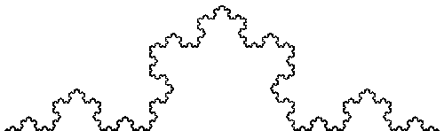

| 1. Subdividing the inch Consider an inch. We shall successively subdivide it into halves, and
the halves into halves, and so on. Seeking the scaled patterns within patterns is a
natural approach for people accustomed to thinking about fractals. |
| (a) First, divide the inch into halves, left and right. To each point in
this inch we assign an address, 0 to the points on the left half, 1 to the points on
the right half. Because an address of 0 means the point is less than 1/2 and an
address of 1 means the point is greater than 1/2, we can think of this address as
giving the number of 1/2s in the point. Answer |
| (b) Next divide each half into halves of halves, that is, into quarters. The
second address digit, 0 or 1, indicates whether the point is in the left or right side
of the half to which it belongs. Write the address digits of these four intervals and
interpret the address of each interval in terms of the number of 1/4s of each
point of the interval. (Ignore the endpoints of each interval. Addresses of these points
are treated in problem 5.) Answer |
| (c) Now divide the quarters into eighths. Write the address digits of these
eight intervals. Answer |
| (d) Note the order of the address digits. The first (left) digit tells us to which
half of the inch the point belongs, the next digit to which half of that half, and so on. Compare
this with the usual order we write addresses on letters (physical mail, not email). Give a
concrete example to illustrate your interpretation. Answer |
| (e) To strengthen the tie to fractals, find two transformations f0
and f1 that generate [0, 1] as an IFS. Show that the order of the
address digits is identical to the order of the composition of these functions.
Answer |
| |
| 2. Locating numbers If x lies in the interval with address 0,
we know 0 <= x <= 1/2. If x lies in the interval with address 1, we
know 1/2 <= x <= 1. |
| (a) What can be said about a point x in the interval with address 0110?
Answer |
| (b) Find the intervals of address length 1, 2, 3, and 4 that contain the point
x = 2/7. Answer | |
| 3. Place values In decimal epansions, the first digit to the right of the
decimal is the tenths, the second is the hundredths, and so on. |
| (a) In binary expansions, find the first place with value smaller than one-thousandth. Answer |
| (b) Solve problem (a) using base 2 logarithms, using base 10 logarithms. Answer |
| (c) Decimal expansions correspond to subdividing each interval into ten pieces,
binary expansions into two. Into how many pieces must each interval be subdivided so the
fourth place corresponds to about 0.0004? Answer | |
| 4. Comparing numbers In decimal, changing the 5th digit moves a point
by 0.00001 = 10-5. In binary, changing the 5th digit moves a point by
2-5 = 0.03125. |
| (a) Which binary digits must be changed to move a point by 3/16?
by 11/16? Answer |
| (b) Which binary digits must be changed to move a point by 1/3?
by 1/7? by 1/15? For which fractions 1/n can this pattern of
changes be continued? Answer |
| (c) Which binary digits must be changed to move a point by 3/7?
by 7/15? by 15/31? For which fractions m/n can this pattern of
changes be continued? Answer |
|
5. Non-unique addresses We show that for every interval created by binary
subdivision of [0, 1], the endpoints other than x = 0 and
x = 1 have two addresses.
(a) On successive graphs indicate the intervals with these addresses:
01 and 10, 011 and 100, 0111 and 1000.
Answer |
 |
| (b) Find the address of the right endpoint of the interval with address 0;
find the address of the left endpoint of the interval with address 1. Answer |
| (c) Noting both addresses of (b) correspond to the point x = 1/2,
interpret this equality in terms of infinite series. Answer |
|
| 6. Addresses and functions (a) What is the effect on addresses of
f0 and f1? |
| (b) What are the fixed points of f0 and f1, both in terms
of addresses and algebraically? |
| (c) What are the fixed points of f0(f1) and of
f1(f0), both in terms of addresses and algebraically? |
|
| 7. Fractions and addresses For simplicity we'll use the inch ruler. |
| (a) Suppose the address of x terminates in an infinite string of 0s or in an infinite string of 1s.
What can we say about x? |
| (b) Suppose the address of x consists of a block a1a2...an of
0s and 1s that repeats forever. What can we say about x? |
| (c) Suppose the address of x eventually consists of a block a1a2...an of
0s and 1s that repeats forever. What can we say about x? |
| (d) Suppose the address of x does not terminate in a repeating block. What
can we say about x? |
| (e) Can this be used to illustrate that the irrational numbers are a larger infinite
set than the rational numbers? |
|
| 8. Addresses of points on the Koch curve A similar addressing scheme
can be applied to the Koch curve. With this we show no point of the Koch curve has a
well-defined tangent. |
| Using the standard transformations of the Koch curve, we can assign addresses
0, 1, 2, and 3 to those parts. |
|  |
| (a) On the Koch curve picture below, indicate the regions with addresses 00, 01, 02, 03,
10, 11, 12, and 13.
Answer |
|  |
| (b) Multiple Addresses On the Koch curve picture above, indicate the points with
addresses 0(3infinity) and (0infinity).
Answer |
| As an application of this addressing notion, we show that at no point of the Koch
curve can a tangent be defined. |
| (c) Consider the point 1(3infinity) = 2(0infinity), the apex of the Koch curve.
To show this point has no tangent, we produce a sequence of points converging to the apex,
with the chords from these points to the apex alternating over a 30 degree range. Locate
the points 0infinity, 1(0infinity), 12(0infinity), 13(0infinity),
132(0infinity), and 133(0infinity). Compute the angles between successive chords from
these points to the apex. Answer |
| (d) Next, we consider points with addresses ending in an infinite sequence of 1s
or an infinite sequence of 2s. For example, take the point 1infinity and consider the
sequence of chords to this point from 1(0infinity), 11(0infinity), 111(0infinity),
and so on. What is the general pattern? Answer |
| (e) Addresses that terminate in a constant are treated in parts (c) and (d).
Given any address a1a2a3... that does not terminate in a constant string, what can be
said about the angles of the chords to a1a2a3... from
a1a2a3...ak(0infinity)
for k = 1, 2, 3, ...? Answer |
|